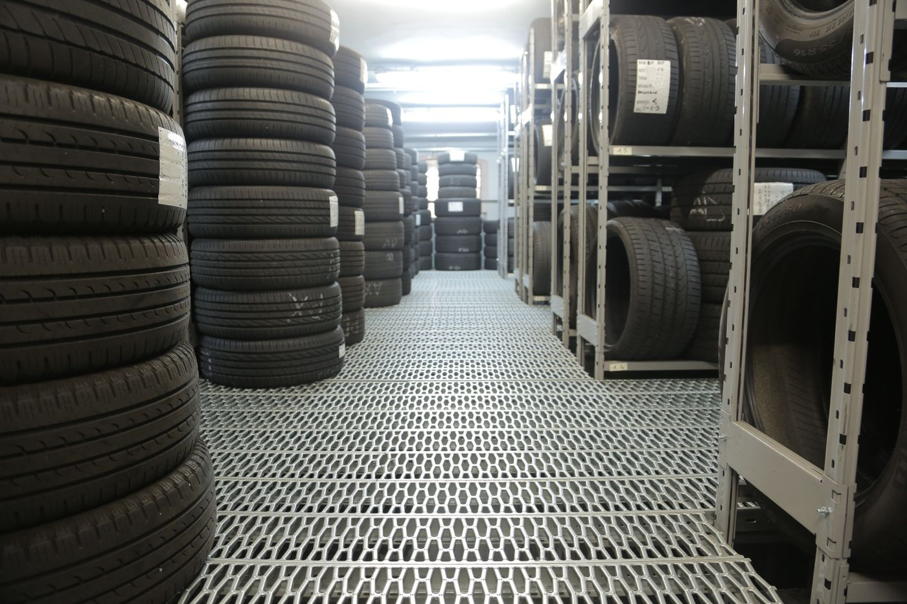

1 час на машину
Запись гарантирует проведение шиномонтажа в выбранное время. 1 час в вашем распоряжении.
Ежедневно, 10:00–18:00
Подбор по диаметру, сезону и состоянию — с телефона. Онлайн-запись на час остаётся, как сейчас на сайте, только теперь ею удобно пользоваться со смартфона.

Это концепт. С вашими фото и правками будет ещё лучше
Выберите параметры — подбор соберётся в одну строку. Можно сразу записаться на монтаж с этим радиусом.
Наличие и цены по запросу — уточняются у магазина. На текущем сайте каталог устроен так же: радиусы R12–R28, летние и зимние, новые и б/у, легковые и грузовые.
Спросить наличие у АлексеяОнлайн-запись у сервиса уже есть — здесь она просто удобна на телефоне. Свободные часы — с 10:00 до 18:00.
Запись гарантирует проведение шиномонтажа в выбранное время — 1 час в вашем распоряжении. Записаться можно в любые дни, даже в праздничные.
Диаметр нужен, чтобы подготовить оборудование и посчитать стоимость.
Так это будет работать: заявка с датой, часом, маркой и диаметром приходит в Telegram сервиса; отметка о предоплате видна сразу. Сейчас это макет — ничего не отправлено и не сохранено.
Формулировки — с текущей страницы записи.
Запись гарантирует проведение шиномонтажа в выбранное время. 1 час в вашем распоряжении.
На текущем сайте шиномонтаж можно сразу оплатить по диаметру шин. В новой версии этот шаг сохраняется.
Отменить запись можно звонком или SMS Алексею.
Только то, что опубликовано на сайте магазина.
Ежедневно с 10:00 до 18:00. Записаться можно в любые дни, даже в праздничные.
Стоимость зависит от диаметра шин; суммы в демо не указаны — уточняется.
На текущем сайте есть разделы «Доставка и оплата» и «Правила доставки и возврата»; условия — уточняются.
Позвонить или отправить SMS: +7 906 964-11-11 (Алексей).
Барнаул, ул. Новгородская, 10. Крупный японский магазин шин и дисков. Ежедневно 10:00–18:00.